Supongamos que Aquí tienes todo los archivos que quieres subir
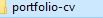Nos dirigimos a nuestra cuenta github para crear un nuevo repositorio ClickAquí
Ahora debemos crear un repositorio, en este caso le pondremos como nombre first-project
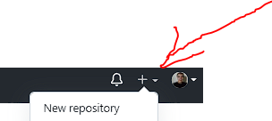 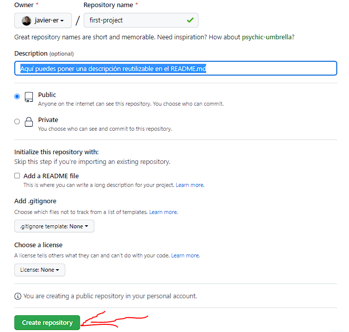Posteriormente lo que debemos hacer es crear una carpeta, ya sea en el escritorio o documentos Con el mísmo nombre que le pusiste a tu repositorio en este caso: first-project como atajo puedes arrastrar la url de la carpeta hacia la terminal, despues del comando cd. En mi caso estoy usando gitbash, puedes hacerlo igual en el shell Power, o simbolo del sistema en windows 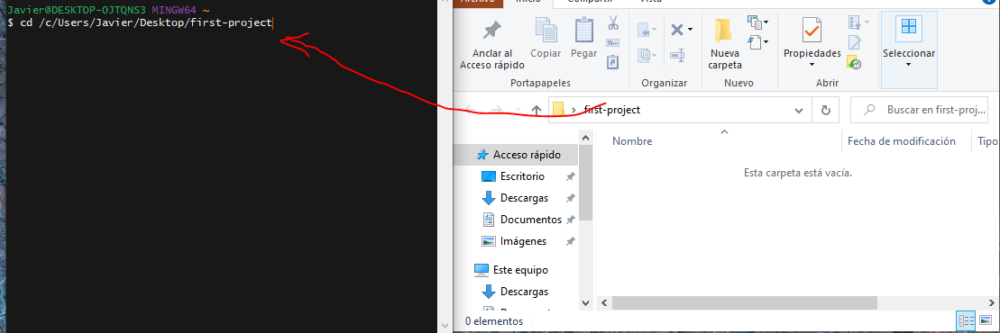
Como verás puedes trabajar directamente desde la terminal externa al editor o abrimos la carpeta que contiene el mismo nombre del repositorio desde VSCode, en nuestro caso first-project y luego ingresa al archivo README.md. Abrimos la terminal, si estas en windows presiona ctrl + ñ e inicializamos nuevamente los comando de git.
Ahora volvemos al repositorio en github y copiamos la direccion del git remote y lopegamos en la terminal
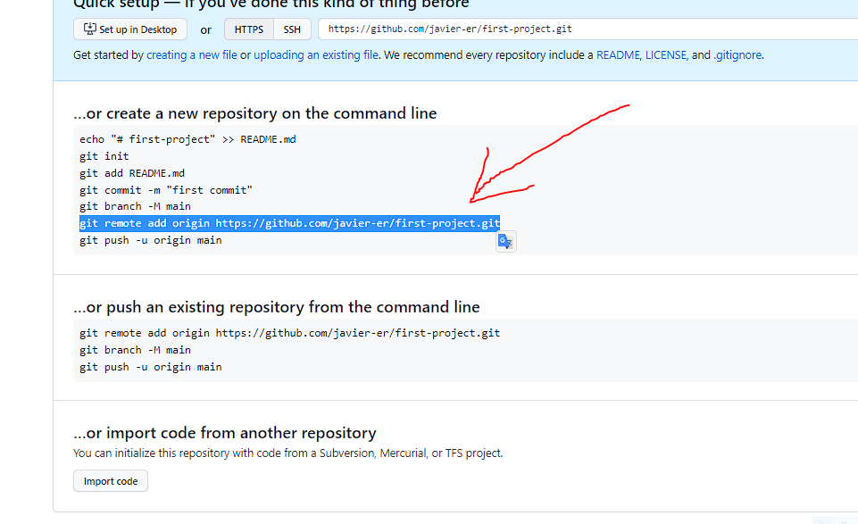 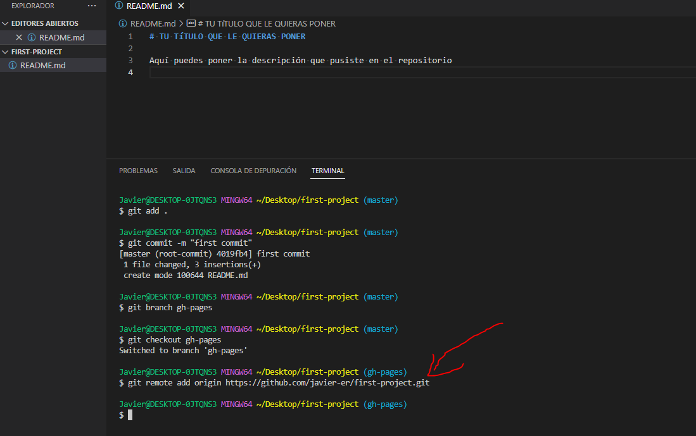Ahora recarga la pág donde vienes trabajando el repositorio y deberia aparecerte así
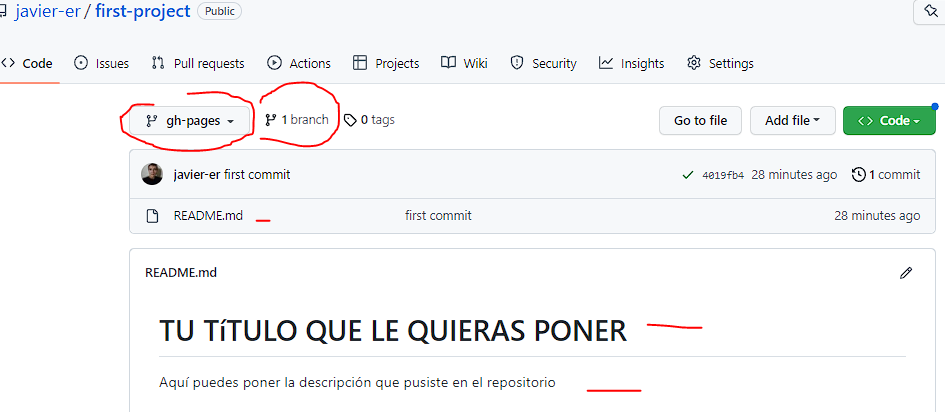Dirigite en donde esta la carpeta de tu proyecto, lo que haremos es copiar y pegarlo a la carpeta que tiene el nombre del repositorio, en nuestro caso first-project Observa la imagen xd
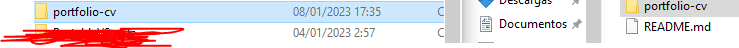VSC detecta los cambios que se an generado
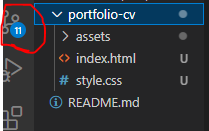Mu bien, si has llegado hasta aquí lo unico que debes hacer es poner la url de tu proyecto en el archivo README.md respetando la sintaxis en este mismo ejemplo sería así, recuerda respetar TU NOMBRE DE USUARIO https://javier-er.github.io/first-project/portfolio-cv
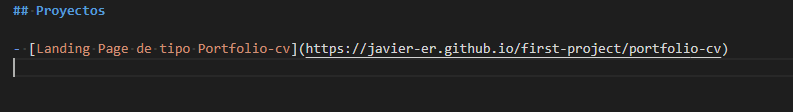Aquí apreciamos la url en github.io
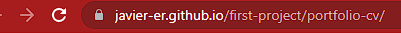